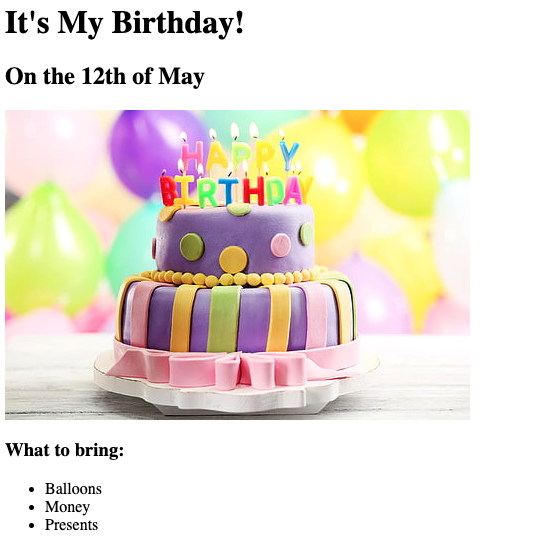
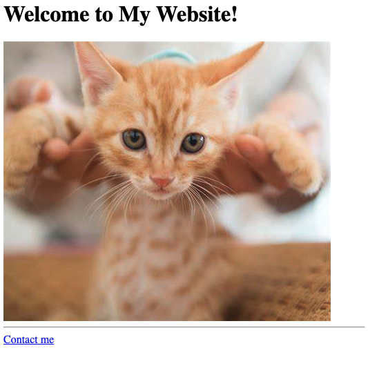

<!-- TODO 1: Create the HTML Boilerplate -->

<!-- TODO 2: Add Your previous projects' HTML into the public folder -->

<!-- TODO 3: Take screenshots of your project previews and add the images to the images folder -->

<!-- TODO 4: Add titles/subtitles etc. -->

<!-- TODO 5: Add a link to the project pages -->

<!-- TODO 6: Add images to show the project previews
HINT for TODO 6: You can use the height attribute set to 200 to make the image smaller:
https://developer.mozilla.org/en-US/docs/Web/HTML/Element/img#attr-height -->

<!-- TODO 7: Add the Contact Me and About Me page links -->

<h1>My name is Kris Hoffman</h1>
<h2>I am a web dev kind of</h2>
<hr />
<a href="../../3/3.4 Birthday Invite Project/index.html"
	><h1>Birthday Invite</h1></a
>

<hr />
<a href="../4.1 Webpages/index.html"><h1>Website</h1></a>

<hr />
<a href="./public/about.html">About Me</a>
<a href="./public/contact.html">Contact Me</a>
